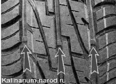
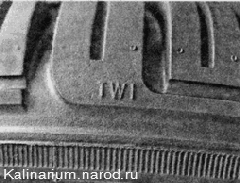
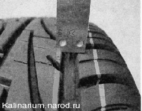
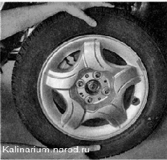

Проверка технического состояния колес, шин и ступицДля выполнения работы потребуется штангенциркуль с глубиномером. Последовательность выполнения 1. Перед каждой поездкой внимательно осматриваем колеса автомобиля и элементы их крепления. Каждое колесо крепится к ступице четырьмя болтами. Энергично нажимаем на боковину колеса ногой, раскачивая его в поперечном направлении. Если болты крепления колеса не затянуты, оно начнет болтаться на ступице. При малейшем подозрении на ослабление крепления колеса проверяем затяжку болтов (момент затяжки указан в разделе «Справочные данные»). Диски колес должны быть без трещин и следов деформации. Па шинах не допускается наличие порезов, отслоений, разрывов, вздутий («грыжи»), выступания корда. 2. При отсутствии механических повреждений шины пригодность ее к эксплуатации определяется высотой рисунка протектора. Визуально определяем высоту протектора по индикаторным выступам в канавках рисунка. Выступы имеют высоту 1,6 мм. Как только высота протектора сравняется с высотой выступа, шина подлежит замене. Индикаторы расположены по всей окружности шины на некотором расстоянии друг от друга. Находим их по условным обозначениям в виде букв «TWI» или стрелками на боковине шины. 3. Точно высоту протектора определяем при помощи глубиномера штангенциркуля и сравниваем степень износа шины по краям и в середине. Ускоренный износ средней части протектора свидетельствует об эксплуатации шины с повышенным давлением, по краям шины — с пониженным, а быстрый износ внутренней или наружной части протектора указывает на необходимость регулировки углов установки колес. Интенсивный износ одного из колес, возможно, вызван деформацией элементов подвески или силовых элементов кузова автомобиля. Согласно «Приложению к Основным положениям по допуску транспортных средств к эксплуатации и обязанностям должностных лиц по обеспечению безопасности дорожного движения», запрещается эксплуатация легкового автомобиля: - если высота протектора шин составляет менее 1,6 мм; - с шинами, имеющими внешние повреждения (пробои, порезы, разрывы), обнажающие корд, а также расслоение каркаса, отслоение протектора и боковины: - если отсутствует болт крепления или имеются трещины диска и ободьев колес, имеются видимые нарушения формы и размеров крепежных отверстий; — если шины по размеру или допустимой нагрузке не соответствуют модели транспортного средства; — если на одну ось автомобиля установлены шины различных размеров, конструкций (радиальная, диагональная, камерная, бескамерная), моделей с различными рисунками протектора, ошипованные и неошипованные, морозостойкие и неморозостойкие, новые и восстановленные. 4. Появление вибрации, ощущаемой на кузове или рулевом колесе при движении автомобиля с постоянной скоростью свыше 80 км/ч, может быть следствием дисбаланса одного из колес. Для выявления причины проверяем балансировку колес в шиномонтажной мастерской. Если вибрация вызвана деформацией диска, повреждением шины или неравномерным ее износом, заменяем шину или диск. 5. Поочередно вывешиваем каждое колесо автомобиля и покачиваем его в вертикальной плоскости. В ступицах с изношенными подшипниками будет чувствоваться люфт. Чтобы убедиться в том, что люфт не вызван неисправными деталями подвески, повторяем проверку при нажатой педали тормоза. Если стук исчез, значит, неисправен подшипник ступицы. Неисправные подшипники заменяем . Если стук слышен, проверяем состояние подвески. |